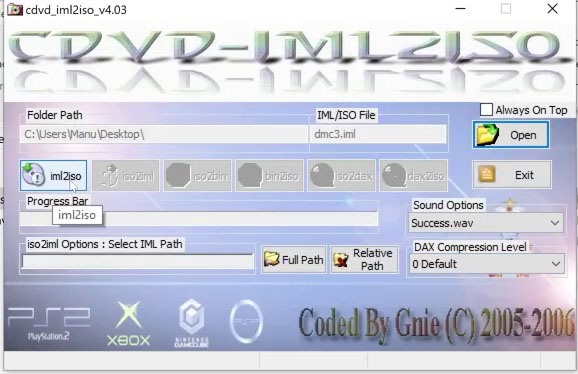

PS2 CodeBreaker Cheats
CodeBreaker es una herramienta de trucos inicialmente desarrollada para consolas como PlayStation 2 y Sega Dreamcast
Para esta Guia
Requisitos para este tutorial
- PC o Notebook con Windows 7, 8, 8.1, 10
- Para descomprimir archivos .rar o .zip
Programas para este Tutorial
| Archivos | Servidores | |
|---|---|---|
| PS2CodeBreaker | Mega | |
Para Empezar este Tutorial
- Descargamos los archivos
- Descomprimimos el archivo .rar o .zip
- PS2.CodeBreaker.Cheats.PS4.FPKG.rar
- Con la última versión disponible
- Una vez descargado nuestro archivo
- Lo extraemos y ejecutamos
- Para esto debemos tener la ISO de nuestro juego PS2 de preferencia americano
- Y descomprimir el archivo PS2.CodeBreaker.Cheats.PS4.FPKG.rar
- Debemos extraer todos los archivos de nuestro ISO de PS2 podemos usar 7ZIP o Winrar para ayudarnos a la extracción de los archivos
- Cuando lo tengamos listo abrimos la carpeta PS2 CodeBreaker Cheats PS4 FPKG del archivo que descargamos
- Abrimos PS2LOADELF y copiamos todo el contenido del juego a esta carpeta
- Copiamos el nombre del archivo LNCF_999.99 y abrimos el SYSTEM.CNF para editarlo y en la línea BOOT2 = cdrom0:\SLUS_XXX.XX;1 colocaremos el nombre copiado y lo guardamos
- Y volvemos atrás y abrimos la carpeta cddvdgen y buscamos Cdvdgen.exe y lo ejecutamos
- En la aplicación le damos a Create new proyect y después nos preguntara si es CD o DVD si es menor que 700 la imagen es CD si es mayor es DVD
- Después buscamos la carpeta PS2LOADELF y seleccionamos todo el contenido y lo soltaremos en la aplicación dentro del Root
- Después vamos a la pestaña donde dice Volume y completamos los datos
- Disc Name: Código del Juego
- License Area: Área del juego
- Cuando terminemos le damos a File/Export iml file para obtener los archivos necesarios los guardamos en el escritorio con el nombre que queramos y cerramos la aplicación al terminar de crear los archivos
- Ahora abriremos la carpeta cdvd_iml2iso_403 y abrimos la aplicación cdvd_iml2iso_403.exe
- Usaremos el botón Open para buscar el archivo xxxx.iml que creamos con anterioridad
- Y después le damos al Botón iml2iso y esperamos que termine de crear la iso 
- Ahora cerramos todo y podemos eliminar todos los archivos que creamos
- Ahora abriremos la carpeta
PS2 Classics Gui v1/Application Files/PS4 PS2 Classics GUI_1_0_0_3y buscaremos la aplicación PS4 Ps2 Classics GUI.exe para crear nuestro pkg del juego de PS2 - Igual podemos usar otro método para crear nuestro PKG
- Dentro de la aplicación podemos descargar las carátulas y agregárselas y cargar la imagen iso y colocar el ID del juego y su nombre
- Cuando termine de crear el pkg lo instalamos en nuestra consola PS4
- Cuando ejecutemos el juego nos arrancara el administrador de archivos de PS2
- En esta pantalla le damos al
 y vamos a cdfs:/--ELF--/ y seleccionamos CODEBR-1.ELF y le damos al
y vamos a cdfs:/--ELF--/ y seleccionamos CODEBR-1.ELF y le damos al - Nos cargara la aplicación para cargar los trucos nos vamos a Select Cheats para seleccionar los trucos
- Buscamos el juego dentro de la lista y lo seleccionamos la derecha
- Y seleccionamos los trucos que necesitemos y le damos a la para volver y le damos al panel táctil para volver al menú principal
- Y le damos a Start Game para iniciar el juego con la

- Se nos abrirá el administrador de archivo de nuevo, pero ahora vamos a cdfs:/ y seleccionamos SLUS_213.61 de nuestro juego
- Y se nos abrirá el juego con los trucos activos a disfrutar
- Y listo
×